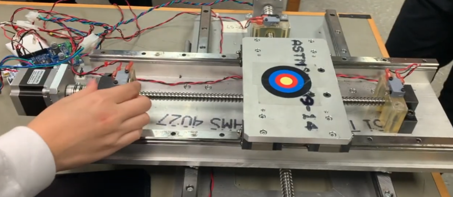

2 Axis Limit Switch
This embedded systems project controlled two motors using a microcontroller (STM32F401RE) and a set of limit switches. The motors stopped automatically when the switches were triggered at the ends of their respective axes.
Overview
- Controlled 2-axis motor movement with limit switches to stop travel at end positions.
- Used STM32 microcontroller and custom C code to respond to switch inputs.
- Verified correct stopping behavior by manually triggering switches during operation.
Embedded Systems Implementation
- Configured GPIO pins with internal pull-up resistors to monitor digital input from limit switches.
- Implemented external interrupts on falling edge to detect limit switch activation events in real-time.
- Developed ISR routines to disable motor driver output upon switch activation, ensuring axis constraints.
- Used ADC input to read analog sensor values (e.g., potentiometer for speed or position feedback if applicable).
- Transmitted system status over UART to monitor state transitions and verify ISR behavior during testing.
System Testing and Verification
- Tested switch activation by manually triggering each limit switch during motor movement. Verified immediate stop response.
- Observed UART output for real-time feedback on system state, including switch activations and motor status.
- Used onboard LEDs to indicate system readiness and fault conditions during development.
- Validated ADC input accuracy by comparing read values against known reference voltages.